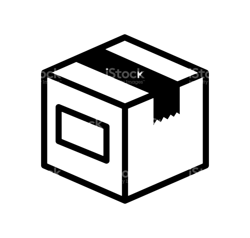

É uma solução de software de comunicação que atua
como uma base sobre a qual desenvolvedores podem
integrar uma variedade de aplicativos.
Metodos de comunicação típicos, como voz, chamadas
de vídeo ou mensagens de texto SMS, podem ser
incorporados em outros sistemas por meio de APIs que
se conectam à plataforma CPaaS.
Essas APIs permitem que as empresas expandam suas
ofertas sem a necessidade de hardware ou software
adicional.
O CPaaS, com sua escabilidade,
flexibilidade, autenticação e segurança
aprimoradas, está revolucionando o modo como
as empresas habilitadas em nuvem implementam comunicações de voz, SMS e vídeo.
dos profissionais se coectam de
maneira diferente com colegas e clientes do que
faziam há apenas 5 anos.
As receitas de CPaaS estão crescendo mais de
40%
ao ano.
CPaaS
já ultrapassou o mercado de
UCaaS
(Unified Comunication as a Service).
Marcas que estão em
múltiplos canals
melhoram a experiência do usuário e aumentam
seus resultados.
/Por imagem ao lado do texto./
Usos
----------------------------------------------

Logística
Acesso seguro com 2FA.
Uso de números mascarados
para proteção de funcionário
e cliente.
Mantenha o cliente
informado sobre entrega e
serviços.
Verified calling para
confirmação de entregas.
Varejo
Compra segura com 2FA.
Avisos sobre compras e
entregas.
Upsell com novas ofertas e
vantagens via SMS ou
Verifield Calling.
Call Center
Melhore taxas de abertura
utilizando alertas SMS para
confirmações.
Economia de números com o
uso de um único número
máscara por todos os agentes.
Verified Calling para
confirmação de
agendamentos.
Saúde
Acesso seguro com 2FA.
Melhore o agendamento e
reduza faltas com lembretes
por SMS.
Tokens de autorização para
procedimentos com 2FA.
Verified Calling para avisos
de resultados e agendamentos.
Exemplos
----------------------------------------------
Cliente fez um
agendamento no site
Enviado e-mail
de confirmação
Cliente acesse sua conta.
Código PIN é enviado
via SMS.
Data de instalação
se aproxima.
Mensagem de voz e SMS são
enviados pro telefone do cliente.
Atualização no envio
de uma compra.
Atualização enviado pro cliente
via e-mail e SMS.
Vantagens Telecall
----------------------------------------------
Confiança
Agilidade
Garantia de Rede
Suporte ao Cliente
Preço
Empresa que já conhecem e confiam;
Aplicativos de rápida implementação;
Rede própria de alta capacidade e controle total de ponta a ponta;
Representantes locais de vendas e suporte;
Melhor custo benefício para um conjunto completo de recursos e serviços;
 Varejo
Varejo
 Saúde
Saúde